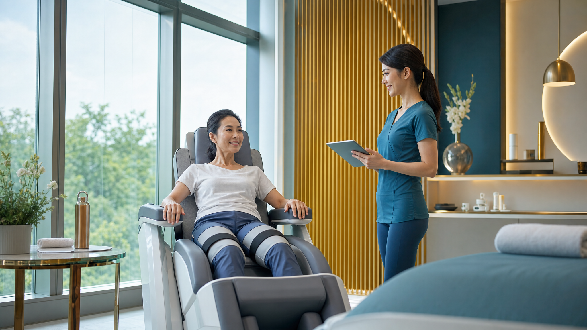
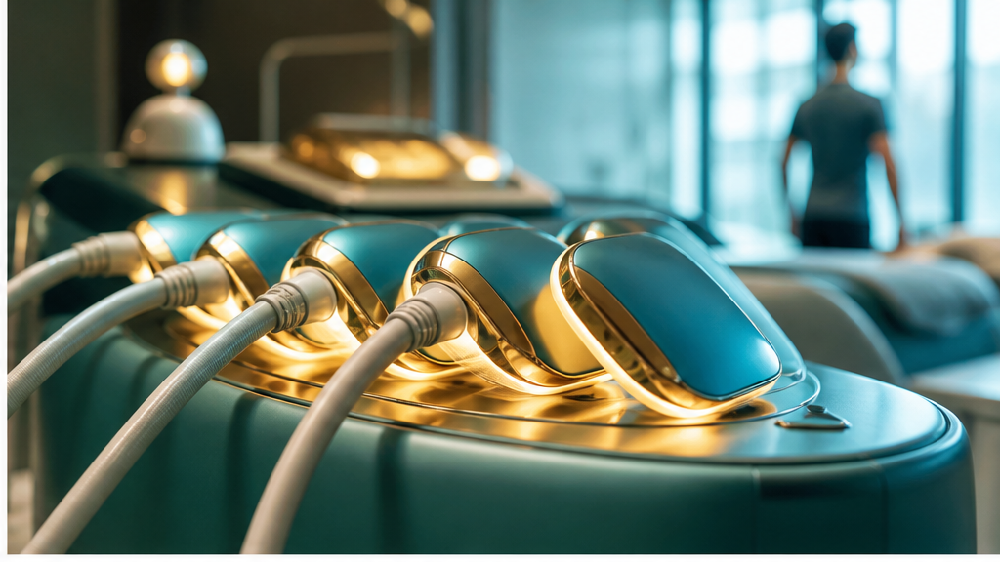

HsinTai Clinic · Anti-Aging Fitness
心泰好診所
抗衰老科技健身
真正的年輕，不只是看起來年輕，而是身體還有力量、步伐還能穩、生活還能自在。

01 / Core Message
抗衰老的核心，是重新啟動身體力量
「讓身體重新有力量，才是真正的年輕。」
當肌力下降、核心變弱、步伐變慢，外表再年輕也很難維持真正的生活品質。
客戶最有感的痛點
02 / Evidence
熟齡肌力流失，是需要被管理的問題
肌肉量開始下滑
Harvard Health 提到，一般人 30 歲後每 10 年可能流失約 3%-5% 肌肉量。
每週肌力訓練
WHO 建議成人與長者每週至少 2 天進行主要肌群強化活動。
平衡與肌力更重要
CDC 建議 65 歲以上族群同時重視有氧、肌力與平衡訓練。
03 / Program
30 分鐘科技健身，讓健康管理更容易開始
方案設計

04 / Technology
科技肌肉刺激，補上平常難練的深層肌群
核心啟動
久坐、姿勢不良與年齡增長，都可能讓核心穩定度下降。科技訓練可作為啟動入口。
臀腿支撐
下半身力量影響行走、站立與日常活動感受，是熟齡健康管理的重要部位。
骨盆底關注
FDA 文件中，部分電磁刺激設備用途包含非侵入式刺激骨盆底肌，作為復健與神經肌肉控制恢復相關用途。

05 / Target Audience
最容易被打動的 6 種客戶
熟齡族群
希望維持行動力、生活自主與身體活力。
久坐上班族
核心無力、腰腹鬆弛、下半身循環差。
怕運動受傷者
想動但擔心膝蓋、腰背或姿勢不正確。
體態管理族
希望加強腹部、臀腿與線條管理。
產後女性
關心核心、骨盆底與體態恢復，但需先經專業評估。
忙碌高階客戶
重視時間效率、隱私與高品質健康管理。
06 / Customer Journey
把一次體驗，設計成長期健康管理
07 / Sales Copy
對客戶最有感的一段文案
你以為抗衰老只是保養外表？真正的年輕，是身體還有力量。心泰好診所透過專業評估與非侵入式科技健身，協助啟動核心、臀腿、腹部與骨盆底等關鍵肌群，讓忙碌、久坐與熟齡族群，也能用更有效率的方式開始肌力管理。
30 分鐘，給自己一次重新照顧身體的機會。
08 / Trust & Safety
客戶信任來自專業流程，不是誇大承諾
09 / Premium Offer
把 1999 變成「每天投資自己」
每天尊榮方案
不要只說價格，要說這是每天給身體的高效率投資。對高階客戶而言，時間效率與專業感比折扣更重要。
建議包裝
10 / Landing Page Structure
建議做成網站頁面的 7 個區塊
痛點開場
你不是不想動，是身體需要更溫和的開始方式。
方案介紹
30 分鐘科技健身與專業評估。
適合族群
熟齡、久坐、怕受傷、忙碌客。
科學佐證
WHO、CDC、肌少症、電磁刺激研究。
流程說明
預約、評估、體驗、回饋、方案。
尊榮價值
每天 1999 的時間效率與健康投資。
安全提醒
需專業評估，不替代醫療診斷。
立即預約
LINE / 電話 / 表單導流。
11 / Closing
最終對外主張
心泰好診所抗衰老科技健身，從肌力、核心、代謝與行動力開始，陪你找回更輕盈、更穩定、更有活力的自己。
專業
診所級評估與安全流程。
效率
30 分鐘啟動關鍵肌群。
尊榮
為重視生活品質的人設計。